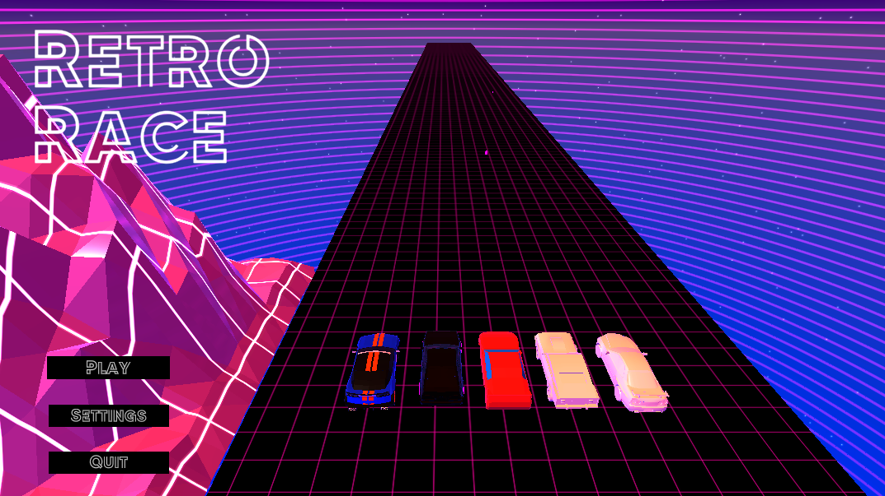
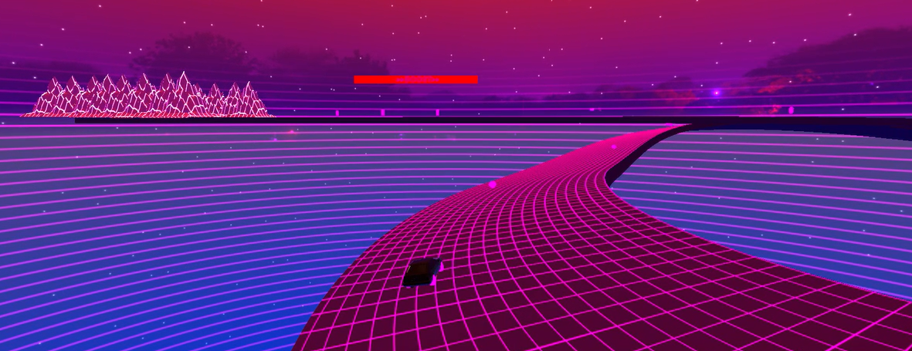
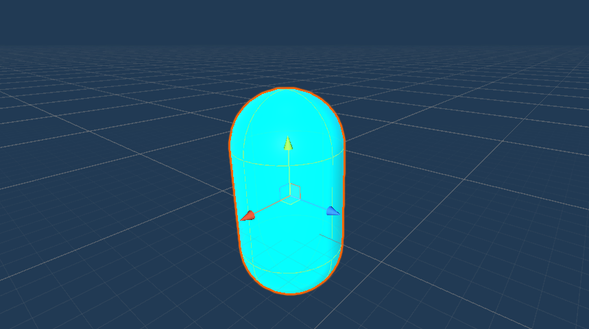

Retro Race is a synthwave inspired racing game in which the player can pick between a list of cars and race a computer on a track in space. The goal of this project was to become more familiar with mathematic concepts applied on the level of the Unity game engine through the development of a drifting mechanism similar to other racing games such as Forza and Underground.
Infrastructure
In Retro Race's development, I focused on creating a versatile infrastructure for various cars, with each car's model being inspired by Synthwave texture materials. I implemented an inheritance system, providing fundamental controls while allowing individual cars to define specific attributes like speed, acceleration, and traction. This approach not only allowed me to design the behavior of an AI car much easier, but it also provided a learning experience through the incorporation of essential physics concepts like momentum and vector decomposition.
Drifting Mechanics
The drifting mechanic of Retro Race was overall the most difficult part of the development, but it also provided a sense of uniqueness to our game in comparison with other game demos made in our cohort. While initially we thought it would be as simple as take a diagonal vector and sending the force in that direction, we quickly found that the graphical representation of our attempt would not match up at all with what we were trying to achieve. My job was to try and find a way using a Unity provided function to determine a more precise way of applying the forward force on the car without ruining the in-world representation of the car. The method I found was to use a linear-interpolation, a function that I would use many more times in future endeavours. By LERPing between the forward and horizontal axis, I found a better normal to apply a force to the player's car, and by storing the value, we could also define how the car should be spun on the z-axis to provide visual semblance of drifting in the game. Once we had perfected our drifting system, we applied it to the opposing AI car, created a finish line on the track, and enhanced our game manager to feature an end-screen for the race itself. Our final step would be to add variation in our game using power-ups.
Power-Ups
During the design phase of our game, we were thinking of ways we can help the player get used to the mechanics of the game without them thinking they are being blown out of the race by the AI every time. Drifting games are hard, and we wanted to even the playing field. We came up with 2 different ideas centered around the same in-game object, a pickup. The first iteration of the pickup was that the player would be gaining a "boost" meter which would temporarily accelerate the car based on how filled the boost meter is and the only way to replenish it would be to drift, or drive over the pickups on the track. The second pickup type we created was specific power-ups with different stimuli, such as making it more difficult to see the screen, reducing the other car's overall speed for a few seconds, or increasing your own car's capabilities. We developed these power-ups with the idea that they should be easy to pickup on the track, and they should be easy to understand the effect based on the model and VFX that are attributed to it.
Ultimately, this game served the purpose of introducing real-world mathematical problems to video-games and improving my understanding of how math concepts are incorporated into game worlds. It also served as an introduction of creating stimulus effects whether it be on opposing AI or applying an effect to the player themselves. Feel free to try it out from our Github!